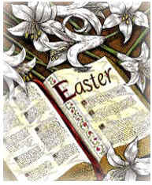
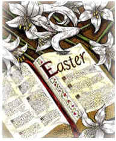

Easter
INTRODUCTION
The greatest festival of the Christian church
commemorates the resurrection of Jesus Christ. It is a movable
feast; that is, it is not always held on the same date. In AD 325
the church council of Nicaea decided that it should be celebrated on
the first Sunday after the first full moon on or after the vernal
equinox of March 21. Easter can come as early as March 22 or as late
as April 25.
LENT
Connected with the observance of Easter are the
40-day penitential season of Lent, beginning on Ash Wednesday and
concluding at midnight on Holy Saturday, the day before Easter
Sunday. In many churches Easter is preceded by a season of prayer,
abstinence, and fasting. This is observed in memory of the 40 days'
fast of Christ in the desert. In Eastern Orthodox churches Lent is
50 days. In Western Christendom Lent is observed for six weeks and
four days.
Lent may be preceded by a carnival season. The
origin of the word carnival is probably from the Latin carne vale,
meaning flesh (meat), farewell. Elaborate pageants often close this
season on Shrove Tuesday, the day before the beginning of Lent. This
day is also called by its French name, Mardi Gras (Fat Tuesday).
Ash Wednesday, the first day of Lent, gets its
name from the practice, mainly in the Roman Catholic church, of
putting ashes on the foreheads of the faithful to remind them that
man is but dust.
OTHER IMPORTANT
DAYS
Palm Sunday, one week before Easter, celebrates
the entry of Jesus into Jerusalem. Holy Week begins on this day.
Holy Thursday, or Maundy Thursday, is in memory of the Last Supper
of Christ with his disciples. Good Friday commemorates the
crucifixion.
SYMBOLS
Many Easter customs come from the Old World. The
white lily, the symbol of the resurrection, is the special Easter
flower. Rabbits and colored eggs have come from pagan antiquity as
symbols of new life. The Easter rabbit, a symbol of fertility, and
in colored easter eggs, originally painted with bright colors to
represent the sunlight of spring, and used in Easter-egg rolling
contests or given as gifts. Easter Monday egg rolling, a custom of
European origin, has become a tradition on the lawn of the White
House in Washington, D.C. During the Octave of Easter in early
Christian times, the newly baptized wore white garments, white being
the liturgical color of Easter and signifying light, purity, and
joy. More info on symbols.
ORIGIN OF THE
NAME
The name Easter comes from Eostre, an ancient
Anglo-Saxon goddess, originally of the dawn. In pagan times an
annual spring festival was held in her honor. Some Easter customs
have come from this and other pre-Christian spring festivals. Others
come from the Passover feast of the Jews, observed in memory of
their deliverance from Egypt. The word paschal comes from a Latin
word that means belonging to Passover or to Easter. Formerly, Easter
and the Passover were closely associated.
The resurrection of Jesus took place during the
Passover. Christians of the Eastern church initially celebrated both
holidays together. But the Passover can fall on any day of the week,
and Christians of the Western church preferred to celebrate Easter
on Sunday the day of the resurrection.
EASTER CUSTOMS
FOOT WASHING
During Christ's time, people wore sandals and had to walk many
miles each day on dusty road. It was courtesy and respect for a
servant to wash the feet of guests when they arrived. Jesus washed
the feet of all his disciples the night before he was crucified.
This gesture was to show his disciples that he was their servant and
he respected them. It was also to show them that in order to be good
leaders, they must show respect to their followers and be willing to
serve.
Kings and Lords during medieval times followed Jesus' example.
They did this by washing the feet of twelve of the poorest men in
their kingdom on the Thursday before Easter. In England, it was
custom for kings and queens to wash the feet of as many poor people
as they were in years old. This custom is still practiced by Queen
Elizabeth today.
MAKING AN EASTER TREE
The making of an Easter tree is an old custom in Germany, Holland
and some other European countries. They brought this custom to the
United States when they came. Days before Easter, these Europeans
would bring in bare branches and put them in a pot filled with
earth. The children will then decorate them with decorated empty
eggs. They did this by emptying the eggs, dyed them and then used
ribbons to tie and hang them on the bare branches. The bare branches
symbolize death while the eggs are a symbol of life.
EASTER EGG HUNTING
Easter egg hunt is common all over the world. Eggs are hidden by
adults and the children hunts and collects them. The one with the
most eggs is the winner.
EASTER EGG ROLLING
This custom was started in Europe a long time ago. Contestants
rolled their eggs on gentle slopes toward the finish line at the
bottom of the hill. The first unbroken egg over the line is the
winner. An annual egg roll was started in the United States during
President Andrew Johnson's period. The White House south lawn now is
the site of the Easter Monday Egg Roll. Many children participate in
this yearly event.
Sources:
Funk & Wagnalls Knowledge
Center
Compton's Interactive Encyclopedia,
1995 |


 
